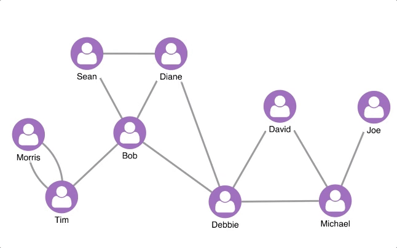
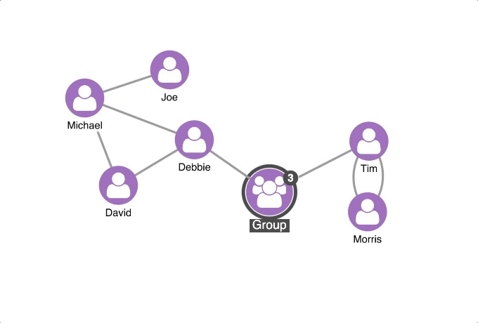
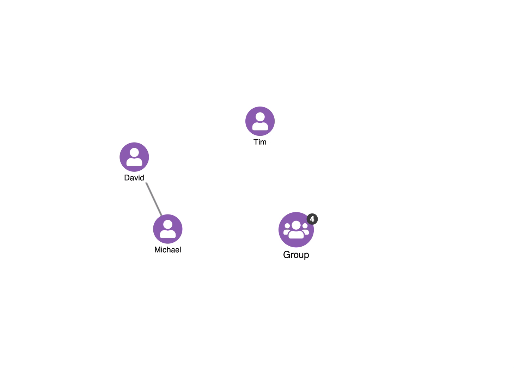
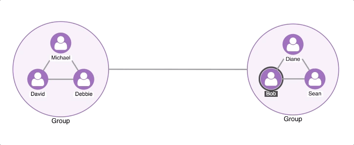
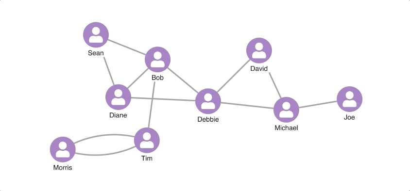
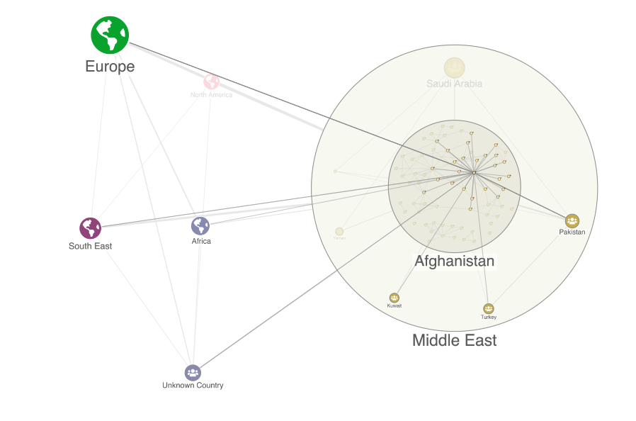

Combos
Introduction#
Data-heavy visualisations are often complex. To reduce clutter, you can combine multiple nodes into a single combined node. We call this a combo.

Links are combined too. Notice how Debbie's links to Diane and Bob combine automatically into a single link, referred to as a combo link.
Combos have two states: open or closed. When they're open, you can see and interact with the items inside the combo border.
Creating and removing combos #
There are two ways to create combos, each of which can be useful for different tasks:
- Combine the existing nodes using chart.combo().combine() function.
- Assign
parentIdto nodes as they are added to the chart with load, merge and expand.
Combining existing nodes using chart.combo().combine()#
chart.combo().combine({ ids: ['A', 'B', 'C'] });
Use this approach for creating combos after the data is loaded, for example when you want to allow users to create their own combos.
The created combos are automatically assigned an id when they are created, prefixed with '_combo_' for nodes and '_combolink_' for links.
Assigning a parentId to nodes as they are loaded#
The parentId property of nodes can be set when loading data into the chart to define a combo hierarchy. This method can be used to create combos in a variety of ways:
Note: Charts with combos created using this method which are serialized cannot be loaded in versions of Nexus older than 5.1.
- Loading in data containing nodes and combos:
chart.load({
type: 'LinkChart',
items: [
// Create a new combo like any other node
{ id: 'newcombo1', type: 'node', c: 'blue' },
// Create a child and set a parentId to define 'newcombo1' as a combo
{ id: 'newchild1', type: 'node', c: 'red', parentId: 'newcombo1' }
]
});- Merging or expanding new data into an existing combo:
chart.expand({
// Create a new node and add it to the already present 'newcombo1'
id: 'newchild2', type: 'node', c: 'red', parentId: 'newcombo1'
});- Merging or expanding data into nodes that are not combos:
chart.expand({
// Expand a new node into 'newchild2' to promote it from a node to a combo
id: 'grandchild1', type: 'node', c: 'red', parentId: 'newchild2'
});Notice how the standard node is promoted to a combo by defining the parentId on the new child node.
Nexus detects child nodes and promotes all nodes with children to combos.
Using chart.expand() arranges the contents of new or modified combos by default. Disable this using the name option or by using chart.merge() instead.
Removing combos #
To remove a combo, you have to remove all its child nodes. Empty combos are then deleted automatically. This can be done in two ways:
- Remove nodes all at once using the chart.combo().uncombine() function.
The function moves all child nodes out of the combo, as long as the combo has no parent. If it does, the combo will not be uncombined.
- Specify directly where the nodes are moved to by using the chart.combo().transfer() function. See Transferring nodes between combos for more details.
Open and closed combos#
By default, combos are created in a closed state with a glyph marking the number of nodes they contain. This is useful when looking at the bigger picture on a busy chart.
You can open the combo by double-clicking on the combo node. The double-click event toggles the open and closed state. The change is animated by default.

To create a combo in an open state, set the open
option on chart.combo().combine() to true:
chart.combo().combine({
ids: ['A', 'B', 'C'],
open: true
});To create multiple open combos, use an array of combo definitions:
chart.combo().combine([
{ ids: ['A', 'B'], open: true },
{ ids: ['C', 'D'], open: true }
]);Layouts inside open combos#
There are several automatic layout options available for arranging nodes inside open combos: 'lens' (the default for circular combos), 'concentric', 'grid' (the default for rectangular combos), 'sequential' and 'none' (no arrangement).
For more information, see the section Arrangements - Layouts inside Combos.
Arrangement can be set in multiple places:
- name setting for
arrangeinchart.expand() - name setting in
combo().arrange() - arrange setting in
combo().combine() - arrange setting in
combo().transfer()
Adapting to changes#

When combos change their size as a result of opening, closing, arranging items, transferring items or expanding with new items, other items in the chart move to adapt to these changes. Movement occurs on two levels:
- Inside a parent combo - Items inside the parent combo (e.g. Sean and Debbie above) move to optimise the space in the parent combo when the child combo's size changes.
- At the top chart level - Layout items outside the combo (e.g. Tim, Michael and David above) adjust to optimise the layout space around the open/closed combo.
By default, Nexus will push/pull adjacent nodes away/towards the opening/closing combo as it grows/shrinks.
This push/pull movement can result in a distorted layout so it may not be suitable for all charts. It may be less optimal particularly for charts with regular arrangements and layouts such as grid and sequential.
You can disable the movement at the top chart level,
or at both levels, by setting the adapt option to 'inCombo' or 'none' respectively.
The adapt option is available for
combo.open(),
combo.close(),
combo.arrange() or
combo.transfer().
When disabling this movement to allow the rest of the chart to adapt to the combo size change, you will likely want to update the top level layout or combo arrangement in another way:
- Inside a parent combo - run chart.combo().arrange()
- At the top chart level - re-run or run an adaptive version of the layout:
layout: { 'organic', { mode: 'adaptive', packing: 'adaptive' } };Transferring nodes between combos#
There's a parent-child relationship between a combo and the items inside. Moving a node between the chart and a combo (or between two combos) transfers the child to a new parent.
All transfers use the chart.combo().transfer() function:
chart.combo().transfer(nodeId, comboId);

To transfer an item out of a combo to the top level of the chart, use null as the second argument:
chart.combo().transfer(nodeId, null);
During a transfer between combos, the items inside source and destination combos are automatically arranged by the default arrange option. To stop items being rearranged on each transfer, use:
chart.combo().transfer(nodeId, comboId, { arrange: 'none' });
A common way to transfer nodes is to handle the drag-start event to enable dragging between combos.
Styling for combos#
When styling combos, you need to consider the style of the combo in both the closed and open state.
If you are creating a combo using chart.combo().combine(),
you can set these styles as part of the
combo definition object:
chart.combo().combine({
ids: ['A', 'B', 'C'],
style: { c: 'blue', t: 'Closed combo' }, // closed combo style
openStyle: { c: 'green', t: 'Open combo' } // open combo style
});If you are creating a combo by assigning a parentId to nodes as they are loaded,
a closed combo is styled just like a normal node while the
open combo is styled in the oc property:
chart.merge([
{
id: 'newcombo1',
type: 'node',
c: 'blue', // closed combo style
t: 'Closed combo',
oc: {
c: 'green', // open combo style
t: 'Open combo'
}
},
{ id: 'newchild1', type: 'node', parentId: 'newcombo1' }
]);Closed combos look and behave just like regular nodes and have the same styling options. See the style property for more details.
For styling options available for open combos, see the oc property. Open combos can also be styled using advanced combo styling.
Default styles#
If you don't set any styling, the following styles are used by default:
- Closed combo node inherits the style of the first node in the array of nodes it contains
- Open combo uses a default grey
- Combo link takes the colour of a link it contains
- Closed combo counter glyph uses a default red and is shown by default
You can configure your own styling when you create combos, or set default styles to be applied automatically using the defaultStyles option:
chart.options({
defaultStyles:{
openCombos: { c: 'yellow' },
comboLinks: { ls: 'dashed' },
comboGlyph: { fi: { t: GraphNexus.getFontIcon("fa-exclamation-circle") } }
}
});
Rectangular combos#
The shape property
in the combos chart option controls the shape of all open combos in the chart.
There are two combo shapes available in Nexus - 'circle' (default) and 'rectangle':

By default, the items inside rectangular combos are arranged using the 'grid' layout, introduced especially for rectangular combos to help increase node density and reduce white space.
Resizing combos#
Manual resize#
You can resize combos using the properties in the oc options:
chart.setProperties({ id: 'comboId', oc: { w: 500 }});
Alternatively, to set up drag handles for a user to set the size of the combo, you can set the combo's re property to true:
chart.setProperties({ id: 'comboId', oc: { re: true }});
Automatic resize#
To automatically resize combos you can use chart.combo().arrange():
chart.combo().arrange('comboId', { name: 'lens', resize: true });
To run a resize without a layout you can set name to 'none'.
Some combo functions like expand and transfer resize automatically when a combo's contents change. This can be controlled through the options parameter:
chart.expand(
{ id: 'childId', type: 'node', c: 'red', parentId: 'comboId' },
{ arrange: { resize: true }}
);To disable automatic resizing of these functions, set the resize option to false.
chart.combo().transfer(nodeId, comboId, { resize: false });
Revealing links#
When a combo is created, links combine where possible to decrease density of visualized connections and help prevent the hairball problem.
Sometimes it may be important to see every individual link between key nodes,
even if those nodes are in a combo. You can do that with the chart.combo().reveal() function:
chart.combo().reveal(linkIds);
In a more advanced scenario, you can click on a node to reveal its links and bring their parents to the foreground:

For a more detailed explanation of what's happening here, see the Revealing links to neighbours example in Combos Concepts.
You can also configure Nexus to combine groups of links according to specified criteria, and display them as just one 'aggregate link'; see Aggregate Links.
Nested combos#
Earlier we described the parent-child relationship between a combo and the items inside it. When one of those items is another combo, we call that a nested combo.
Nested combos are a good way to represent subsets of data such as departments in organisations, or countries in regions. In the example above, Middle East is the top parent and Afghanistan is the immediate parent of the selected node.
Finding items#
You might need to traverse the ‘family tree’ of combo parents and children to find the items you need. Let’s look at some common traversal scenarios.
All underlying items#
To find which underlying items belong to a specific combo node or combo link, use chart.combo().info(). For example:
chart.combo().info('comboA');
Parents of children#
To find which parent combos contain specific child nodes and links, use chart.combo().find(). For example:
chart.combo().find(['childnode1', 'childnode2', 'childnode3']);
Immediate and top parents#
By default chart.combo().find() returns the parent at the top of the nested combo hierarchy. If you're are searching for items in a nested combo, you may want to find the immediate parent:
chart.combo().find('childnode1', { parent: 'first' });
First visible parent#
If you want to visually highlight a particular node inside a nested combo, for example as the result of a search, that node may be invisible because one of its parents is a closed combo.
To find and highlight the first visible parent, use:
var firstVisibleNode = searchResultId;
// Walk the hierarchy to find the first visible node
while (firstVisibleNode) {
var parent = chart.combo().find(firstVisibleNode, { parent: 'first' });
// If there's a parent and it's closed, keep walking up the hierarchy
if (parent && !chart.combo().isOpen(parent)) {
firstVisibleNode = parent;
} else {
break;
}
}
// We can now highlight the visible item
chart.setProperties({ id: firstVisibleParent, b: 'red' });If you're using chart.ping() to do this, you don’t need to worry about finding the first visible parent. Pinging a node will always ping its first visible parent.
Identify combo node or combo link#
The chart.combo().isCombo() function checks the ids of nodes and/or links to find out whether they are combo nodes or combo links. For example, to check whether a selection contains a combo node, use:
var selectionContainsNodeCombo = chart.combo().isCombo(chart.selection(), { type: 'node' });
Combos and the Nexus API#
Combos work differently with some Nexus chart functions. To understand why, we recommend you read Combos Concepts. It describes the differences between a 'top level' and 'underlying level' approach to your data, and how this influences the way you iterate over items, decide which items are visible, and run graph analysis.
For easy reference, these are the chart functions affected:
| API function | Behaviour with combos | More information |
|---|---|---|
| animateProperties() and setProperties() | Setting hi: true on a combo hides the items inside the combo but does not change their properties.
Setting hi: false on an item in a combo which is already set to hi: true will change the item's property but the item remains hidden. | Hiding and showing items |
| chart.each() | The items option lets you choose which items to iterate over based on where they exist in the chart. | Filtering and foregrounding items |
| chart.filter() and chart.foreground() | By default, these functions will run against underlying items inside combos. To change this, set their items option to 'toplevel'. | Filtering and foregrounding items |
| chart.graph() | Items inside combos are NOT traversed by the graph API, so you can only run graph analysis on the top-level chart items. You'd need to load the underlying chart into the graph engine so you can run graph analysis against it. | Running graph analysis |
| chart.hide() and chart.show() | If you hide/show a combo, the items inside it are hidden/shown too. If you show an item in a hidden combo or nest of combos, the item and its parent(s) are shown. | Hiding and showing items |
| chart.arrange() and chart.layout() | These functions lay out the combo nodes themselves, but they do not apply to the items inside an open combo. Instead, Nexus uses the chart.combo().arrange function to arrange the items inside an open combo. | |
| chart.contains() | You can use this function to return closed combo nodes, but not open combos or their contents. | |
| chart.removeItem() | Using this function to remove a combo from the chart also removes the nodes and links inside the combo. | |
| chart.selection() | You can use this function to select items inside open combos, but not in closed combos. | |
| chart.serialize() | Combos and the items inside them are serialized in a different section of the chart format. |
See also#
Continue to the Combos Concepts to gain more detailed understanding of the key concepts behind combos.
See the complete list of Nexus Combo Functions in the API Reference.